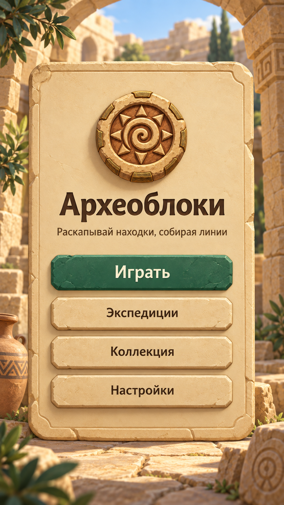
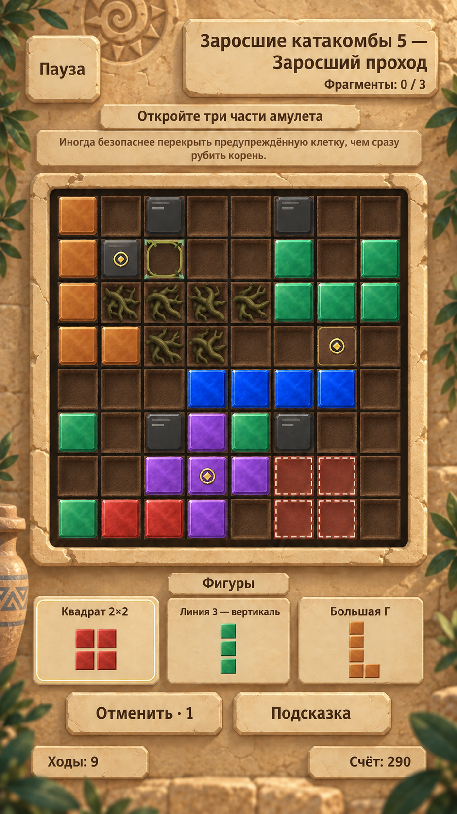
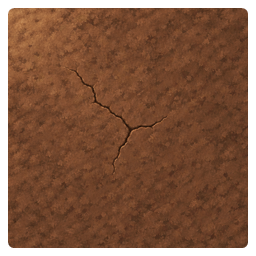
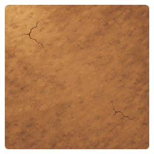
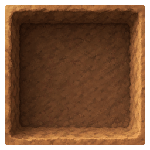
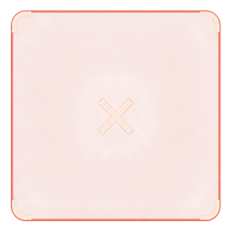

Archeoblocks / art direction / 15.09.2026
Светлый
песчаниковый двор
Тёплый камень и спокойный интерфейс. Цветные минералы обозначают действие, земля и препятствия — состояние мира, золото — находку.
ART V1 · foundation reference
ИнтерфейсГрунтКаменьКорниДействиеЦель
Масштаб просмотра, не интерактивный gameplay

01 · Главное менюДвор задаёт атмосферу. Зелёный CTA первым ведёт к игре; вторичные кнопки остаются спокойными.

02 · Заросший проходChapter III, экспедиция 5 · 9 ходов · счёт 290 · 0/3 фрагментов. Точная геометрия поля из runtime; новый художественный skin.
Грунт → блок → цель
Marker остаётся виден над камнем (R2C2) и фиолетовым блоком (R7C4). На R4C7 он лежит над грунтом depth 2. Цель не зависит от силуэта конкретного артефакта.
Подсказка — будущий ход
Четыре полупрозрачные красные клетки R7–8 / C6–7 соответствуют квадрату в первом слоте. Светлый пунктир отличает hint от уже размещённого блока.
Что ещё проверить
На 360 px мелкий поясняющий текст тесен. Размер единичного блока в слотах ещё нужно точно унифицировать. Depth 1 скрыт камнем в этом честном mid-game; ниже показан отдельный baseline образец.
Состояния: опоры из существующего Cell Pack v2
Это исходные образцы, а не новые production assets. Soil depth 1 не вынесен искусственно на поле ради красивой витрины. Для него сохраняется отдельный контракт и следующая проверка после открытия клетки.

Depth 2Плотная тёмная охра

Depth 1Светлая рыхлая охра

Depth 0Вдавленная полость

ValidКонтур + галочка

InvalidКонтур + крестик
Runtime baseline — что было до ART V1
Свежие скриншоты текущих сцен. В developer baseline видна DEBUG-подсказка; master показывает обычную кнопку. Это не изменение настроек release и не обещание бесплатной помощи.